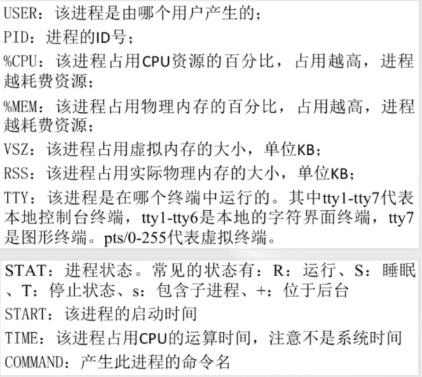
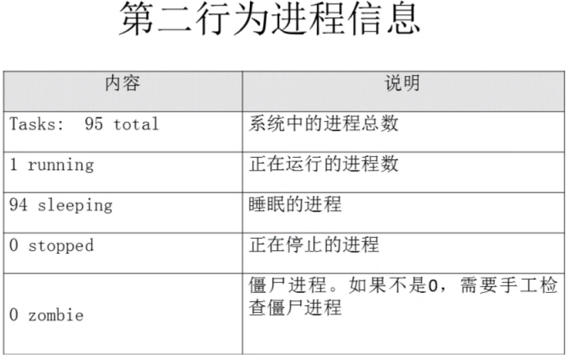
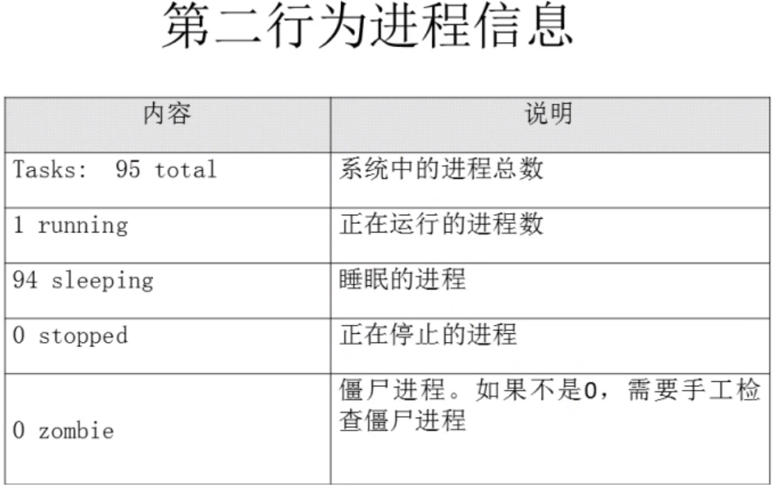
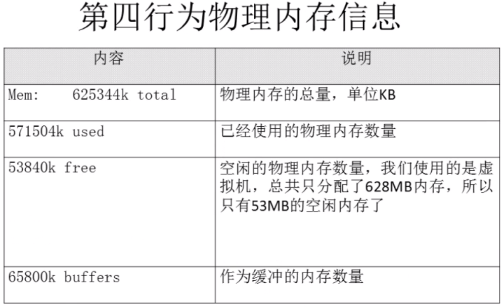
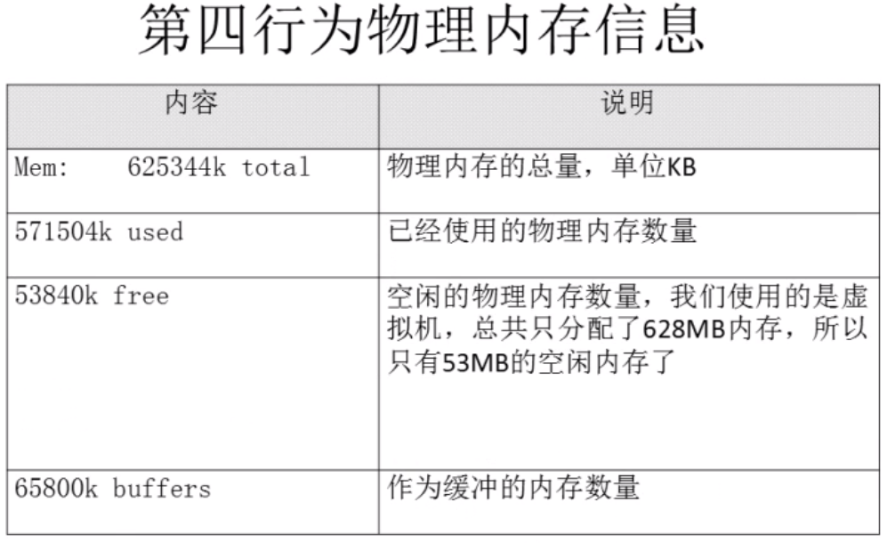
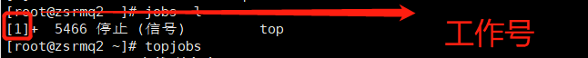
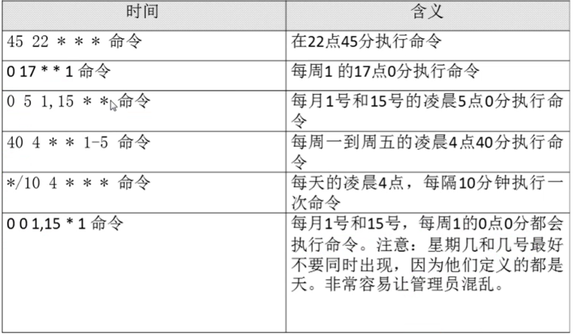

datetime:2022-01-08 14:34:00
author:nzb
Linux系统管理
进程管理
进程管理的作用：（下面优先级由高到低）
判断服务器的健康状态（CPU、内存的占用情况）
常用命令：top查看系统中的所有进程
命令：ps aux 和 ps -el 和 pstree杀死进程
不常用，尽可能正常操作结束服务，不能正常关闭时再用
进程查看
ps aux
查看系统中所有进程，查看BSD操作系统格式ps -xH
列出所有线程ps -le
查看系统中所有进程，Linux格式输出格式的作用
ps aux
- 
top
查看系统健康状态：top [选项] 需要的时候使用，top命令比较耗资源-d 秒数：默认每3秒更新一次，可指定
？或h：显示交互模式的帮助
P：以CPU使用率排序，默认选项
M：以内存使用率排序
N：以PID排序
q：退出top
top命令的显示

重点关注最后一个平均负载(除以 Cpu 核数，如果大于 1.5，表示超出负荷，小于 1.5 基本正常)
 

重点关注第4个CPU的空闲率

重点关注第3个内存的空闲率
- 

- 
pstree
查看进程树：pstree [选项]-p：显示进程的PID
-u：显示进程的所属用户
进程终止
正常命令不能终止服务时才使用kill
kill [信号] PID-l：查看kill支持的信号
小写l
-1 PID：重启进程
-9 PID：终止进程
killall
按照进程名杀死，选项和kill通用：killall [选项] [信号] 进程名-i：有询问
-I：忽略进程名的大小写
大写的i
pkill
按照进程名杀死，选项和kill通用：pkill [选项] [信号] 进程名- 也可以加t选项跟终端号：pkill -t 终端号：按照终端号踢出用户，用 w 命令查询系统中登录的用户，然后用终端号来踢
工作管理
类似Windows的最小化
把进程放入后台
命令后面加&：后台继续运行
在命令执行过程中，按下ctrl+z快捷键：放入后台即暂停
jobs
查看后台的工作：jobs [-l]-l：显示工作的PID
注意：“+”号代表最近一个放入后台的工作，也是工作恢复时，默认恢复的工作；“-”号代表倒数第二个放入后台的工作。

fg
恢复后台暂停的工作恢复到前台运行：fg %工作号- %工作号：%号可以省略，但是注意工作号和PID的区别
bg
恢复后台暂停的工作恢复到后台运行：bg %工作号%工作号：%号可以省略，但是注意工作号和PID的区别
但是不能恢复和前台有交互的命令比如top命令和vim命令，因为就是给用户展示，后台运行没意义
注意：工作号≠PID
系统资源查看
vmstat
监视系统资源使用情况： vmstat [刷新延时(s) 刷新次数] 和top内容差不多，但更简洁dmesg
开机时内核检测，一般结合grep使用free
查看内存使用情况：free [选项]-b：以字节为单位显示
-k：以KB为单位显示（默认就是）
-m：以MB为单位显示
-g：以GB为单位显示

查看CPU信息：
cat /proc/cupinfo：每次开机都会更新
dmesg | grep CPU
uptime：实际就是top命令第一行，跟w看到的一样
uname
查看系统与内核相关信息：uname [选项]-a：查看系统所有相关信息
-r：查看内核版本
-s：查看内核名称
file /bin/ls
判断当前系统的位数（通过系统外部命令的位数来推测）lsb_release -a
查询Linux系统的发行版本lsof
列出进程打开或使用的文件信息：lsof [选项]-s 字符串：只列出以字符串开头的进程打开的文件
-u 用户名：只列出某个用户的进程打开的文件
-p pid：列出某个PID进程打开的文件
系统定时任务
前提：必须启动crond服务：service crond restart，并且chkconfig crond on，Linux系统都是默认启动和自启动的
crontab
设置系统定时任务：crontab [选项]-e：编辑crontab定时任务
打开文件编辑的格式是： * command或执行脚本
第一个*：分钟（0-59）
第二个*：小时（0-23）
第三个*：天（1-31）
第四个*：月（1-12）
第五个*：星期（0-7，0和7都代表星期日）
特殊符号：

示例


- 定期脚本里面的日期输出需要加“\”转义符，原本：date +%y%m%d，定时任务里的脚本：date +\%y\%m\%d
-l：查询crontab任务
-r：删除当前用户所有的crontab任务
删一个任务，进去编辑删除需要删除的任务（vim操作）